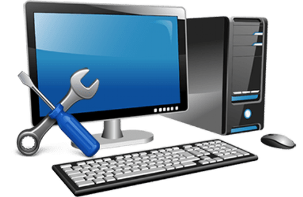
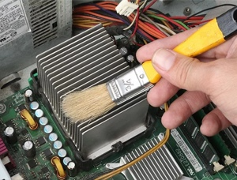
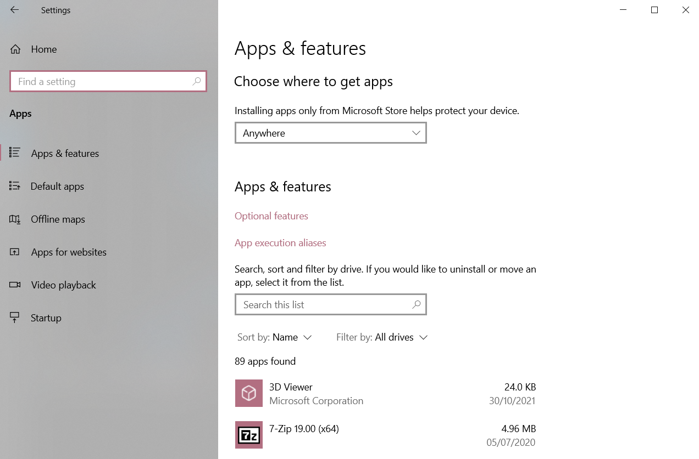
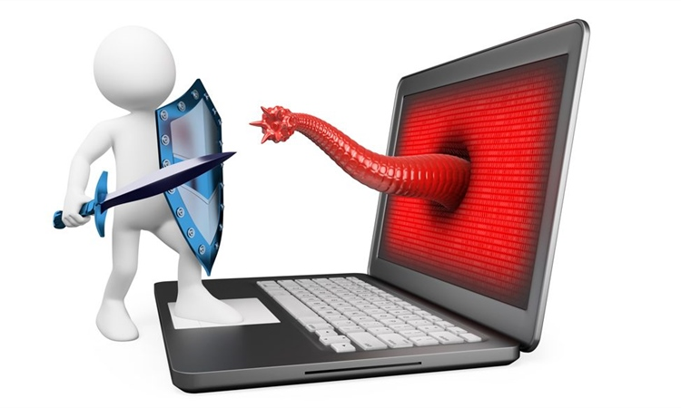
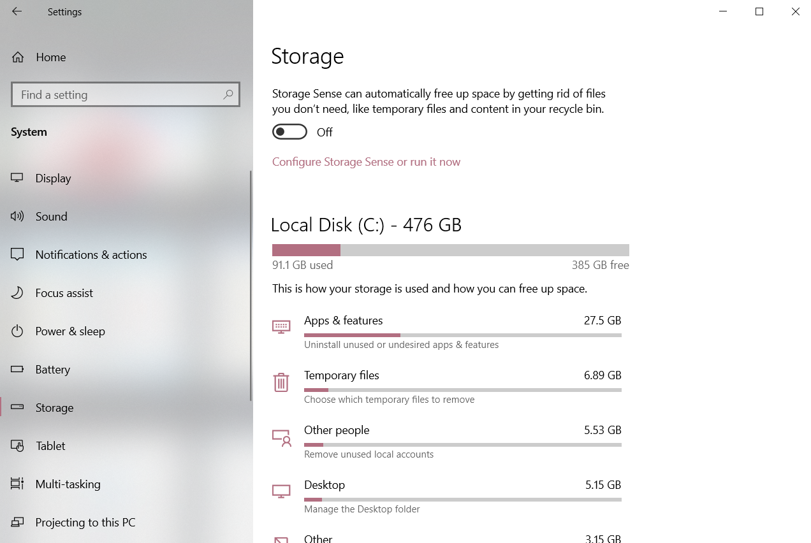
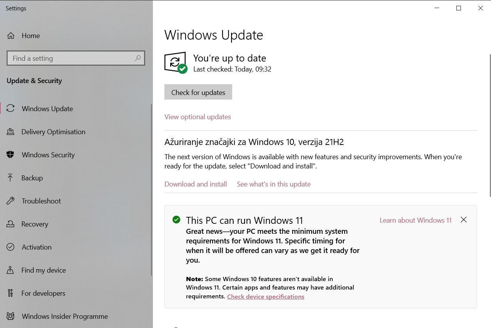

Blog 1
Korisni savjeti za održavanje računara

U ovom blogu vam predstavljam nekoliko korisnih savjeta za održavanje računara za koje, vjerovali ili ne, ne treba biti IT genijalac.😀
Naravno, ovim vam ne garantujem da će vaš računar dugoročno biti bez problema i kvarova, ali će zasigurno spriječiti ih i poboljšati rad računara.
U nastavku je navedeno nekoliko korisnih savjeta, pa pročitajte i slijedite ih:
Naravno, ovim vam ne garantujem da će vaš računar dugoročno biti bez problema i kvarova, ali će zasigurno spriječiti ih i poboljšati rad računara.
U nastavku je navedeno nekoliko korisnih savjeta, pa pročitajte i slijedite ih:
Redovno čistite prašinu u računaru

Nakupljanje prašine u računaru izuzetno može uticati na smanjenje performansi računara, kao i smanjenja njegovog životnog vijeka. Prije samog čišćenja potrebno je da računar isključite iz utičnice. Najbrži, a ujedno i najlakši način da očistite računar
od prašine jeste da uklonite stranicu centralne jedinice računara, te uz pomoć usisivača, kompresora ili četke uklonite prašinu koja se nalazi na dijelovima. Ono što je bitno napomenuti jeste da prilikom tog procesa ne
oštetite neki od dijelova koji su jako osjetljivi. Preporučeno je da računar očistite barem jednom godišnje, a preporučuje se čišćenje svakih pola godine.
Uklonite nepotrebne programe

Redovito provjeravajte u Control Panelu u sekciji Apps and features programe koje imate instalirane na vašem računaru, a koje već duže vrijeme ne koristite i ne planirate ih koristiti - suvišni su. Ukoliko imate
takvih programa pomoću opcije Uninstall potrebno je da ih uklonite. Na taj način ćete osloboditi resurse računara.
Aktivirajte antivirus

Za svaki računar koji je izložen internetu postoji opasnost od virusa, te zbog toga trebalo bi da ima instaliran neki od antivirus programa i da redovno skenirate antivirusom vaš računar. Kompletno skeniranje potrebno je obaviti barem jednom mjesečno.
Na taj način vaš računar činite bezbjednim od opasnih virusa.
| Proizvođač | Proizvod | Zaštita | Performanse | Upotrebljivost |
|---|---|---|---|---|
| AhnLab | V3 Internet Security | 6.0 | 6.0 | 6.0 |
| Avast | Free Antivirus | 6.0 | 6.0 | 6.0 |
| AVG | Internet Security | 6.0 | 6.0 | 6.0 |
| Bitdefender | Internet Security | 6.0 | 6.0 | 5.5 |
| F-Secure | SAFE | 6.0 | 5.5 | 6.0 |
Uklonite nepotrebne fajlove iz operativnog sistema

Tokom rada na računaru skupljaju se nepotrebni fajlovi i informacije, većinom u formi "privremenih" (eng. temporary) fajlova. Sisitem ovakve fajlove nikada neće sam obrisati, pa je iste moguće automatski očistiti
uz pomoć, danas dostupnih, različitih programa.
Redovno ažurirajte programe

Redovno pokrećite Windows Update na vašem računaru, što uključuje i redovno ažuriranje drajvera i svih programa. Ukoliko se nađe neki problem sa hardverom ili softverom, uvijek provjerite da li postoji update, jer su vjerovatno novom verzijom riješeni
trenutni problemi.
Blog 2
Instagramov algoritam
Šta je to i kako funkcioniše?
Vrlo pojednostavljeno: algoritam je način na koji Instagram funkcioniše.
Temelji se na angažmanu: lajkovi, komentari, pregledi videozapisa, spremanja i dijeljenjam objava, kao i interakcije putem DM-a (direct message).
Više interakcija = više vidljivosti!
Prati brzinu reagovanja na objavu te dužinu zadržavanja na njoj.
Zato videozapisi i infografike prolaze bolje od fotografija, a objave s npr. 10 komentara u sat vremena i u 5 minuta neće kotirati jednako na pretraživačima.
Temelji se na angažmanu: lajkovi, komentari, pregledi videozapisa, spremanja i dijeljenjam objava, kao i interakcije putem DM-a (direct message).
Više interakcija = više vidljivosti!
Prati brzinu reagovanja na objavu te dužinu zadržavanja na njoj.
Zato videozapisi i infografike prolaze bolje od fotografija, a objave s npr. 10 komentara u sat vremena i u 5 minuta neće kotirati jednako na pretraživačima.
Hashtagovi
Vrlo su važni jer je Instagram uveo mogućnost njihovog praćenja.
Oni vam povećavaju vidljivost i otvaraju mogućnost da izađete na feedu ili tražilici korisnicima koje zanimaju kategorije kojima vaš profil pripada.
To automatski povezuje vaš profil sa njegovom ciljanom publikom.
Oni vam povećavaju vidljivost i otvaraju mogućnost da izađete na feedu ili tražilici korisnicima koje zanimaju kategorije kojima vaš profil pripada.
To automatski povezuje vaš profil sa njegovom ciljanom publikom.
JESTE LI ZNALI?
Hashtagove možete umanjiti prstima do te mjere da postanu potpuno nevidljivi. Na taj način možete koristiti neograničen broj hashtagova i sve njihove prednosti te se bolje pozicionirati na tražilicama, bez puno teksta koji narušava estetiku!